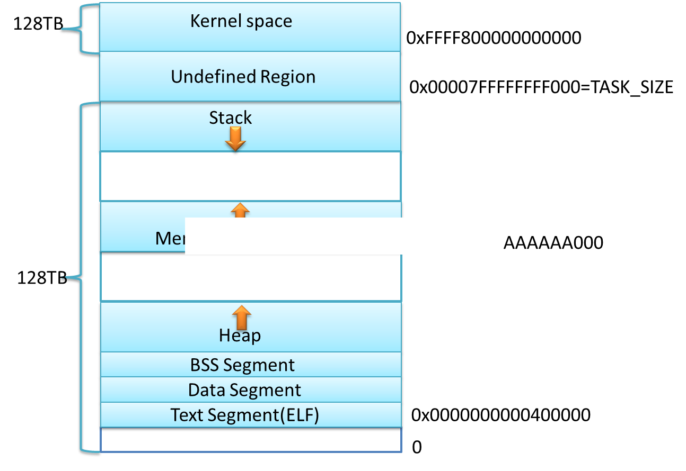
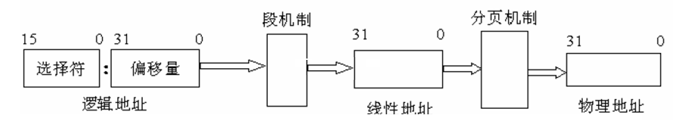
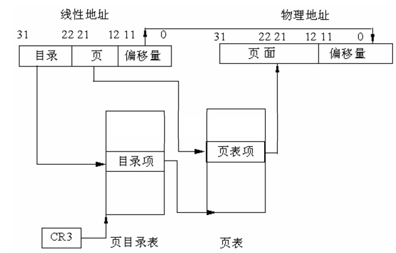
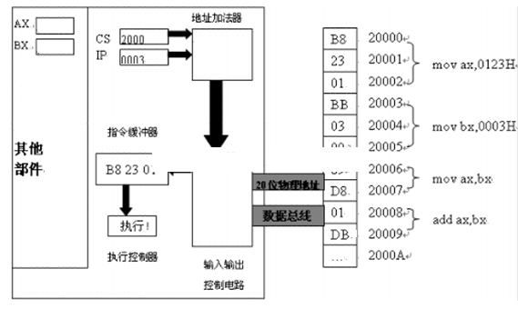

7内存寻址：逻辑地址到物理地址转化
我们知道，在计算机里，内存分为虚拟内存和物理内存。 数据是存放在物理内存中的，而程序中使用的是虚拟内存并通过虚拟内存地址来访问数据和代码的，那么操作系统是如何 将虚拟内存地址映射成为实际的物理内存的呢？这是我们这篇文章要详细介绍的问题。
以X86的32位系统为例。如下图所示，在目前的32位的系统中，系统的内存虚拟地址范围为4GB。 其中低2GB主要为应用程序使用(Ring3级别)，而高2GB为系统内核使用（Ring0级别）。 每一个程序都有属于自己的一个私有2GB虚存空间，而其中的低64KB为NULL地址区域。 从中看出，NULL不单单是0，而是一个大小范围为[0，64KB]这样的一个区域。 而在[0x7fff0000, 0x7fffffff]区域也被定义为非法区域，禁止程序访问， 这样做的目的是禁止处于Ring3级别的应用程序不小心访问了处于Ring 0级别的内核空间。
X86支持32位寻址，因此可以支持最大232=4GB的虚拟内存空间（当然也可以通过PAE将寻址空间扩大到64GB，PAE即Physical address extension，x86的处理器增加了额外的地址线以选择那些增加了的内存，所以实体内存的大小从32位增加到了36位。最大的实体内存由4GB增加到了64GB）。如下图所示，在4G的虚拟地址空间中，Windows系统的内存主要分为内核空间和应用层空间上下两部分，每部分各占约2GB，其中还包括了一个64KB的NULL空间以及非法区域，虚拟地址再通过页表机制映射到物理地址以便存取物理内存中的数据和指令。
| X86 32位 Windows | X64 64位 Windows | |
| 空指针赋值 分区 | 0x00000000 0x0000FFFF | 0x00000000'00000000 0x00000000'0000FFFF |
| 用户模式分区 | 0x00010000 0x7FFEFFFF | 0x00000000'00010000 0x000007FF'FFFEFFFF |
| 64KB禁入分区 | 0x7FFF0000 0x7FFFFFFF | 0x000007FF'FFFF0000 0x000007FF'FFFFFFFF |
| 内核模式分区 | 0x80000000 0xFFFFFFFF | 0x00000800'00000000 0xFFFFFFFF'FFFFFFFF |
X64（AMD64）的内存布局与X86的内存布局类似，不同的地方在于各自空间的范围和大小不同，同时X64下还存在着一些空洞（hole）。在X64内存理论上支持最大264的寻址空间，但实际上这个空间太大了，目前根本用不完，因此实际上的X64系统一般都只支持到40多位（比如Windows支持44位最大寻址空间为16TB，Linux 支持48位最大寻址空间256TB等），支持的空间达到了TB级别。但是，无论是在内核空间还是在应用层空间，这些上TB的空间并不都是可用的，存在着所谓的空洞（HOLE）。
CPU地址总线长度以及寻址范围如下：
8086 20 bit 8088 20 bit 80286 24 bit 80386SX 24 bit 80386DX 32 bit 80486SX 32 bit 80486DX 32 bit Pentium I 32 bit K6 32 bit Duron 32 bit Athlon 32 bit Athlon XP 32 bit Celeron 36 bit Pentium Pro 36 bit Pentium II 36 bit Pentium III 36 bit Pentium 4 36 bit Athlon 40 bit Athlon-64 40 bit Athlon-64 FX 40 bit Opteron 40 bit Itanium 44 bit Itanium 2 44 bit 20 bits 1MB 24 bits 16MB 32 bits 4GB 36 bits 64GB 40 bits 1TB 44 bits 16TB
程序在执行时，传递给CPU的地址是逻辑地址，它由两部分组成，一部分是段选择符（比如cs和ds等段寄存器的值）， 另一部分为有效地址（即偏移量，比如eip寄存器的值）。逻辑地址必须经过映射转换变为线性地址， 线性地址再经过一次映射转为物理地址，才能访问真正的物理内存。转化过程如下：
1）首先逻辑地址需要转化为线性地址。
逻辑地址是以"段寄存器:偏移地址"形式存在的。段寄存器是一个16位的寄存器， 其中第0和1位控制着将要访问段的特权级，第2位说明是在GDT还是LDT寻找地址。 高13位作为一个索引值，总共8192个索引。如下图所示，通过段寄存器里的索引，可以从段描述符表里找到段的基址。 然后用基址加上段内的偏移量，就得到了对应的线性地址。

2）接着线性地址再转化为物理地址。
线性地址可以分为三部分：页目录索引，页表索引，和字节偏移索引。如下图所示，通过页目录索引和CR3寄存器指定的页目录基址之和，可以查询到对应的页表基址。再通过页表索引和页表基址之和， 可以得到对应的页框地址，页框地址再加上页内字节偏移，就最终获得了对应的物理地址。
从C源代码经过编译器编译，链接器链接生成可执行文件之后，接下来程序是怎么执行起来的呢？
接下来，操作系统会将可执行文件加载入内存，CPU将从程序的第一个指令开始执行。在理解CPU是如何执行程序之前，先来看看CPU的构造。CPU主要由运算器、控制器、寄存器组和内部总线等构成。 ALU：运算器是计算机中执行各种算术和逻辑运算操作的部件。运算器由算术逻辑单元（ALU，Arithmetic Logical Unit）、累加器、状态寄存器、通用寄存器组等组成。算术逻辑运算单元（ALU）的基本功能为加、减、乘、除四则运算，与、或、非、异或等逻辑操作，以及移位、求补等操作。计算机运行时，运算器的操作和操作种类由控制器决定。运算器处理的数据来自存储器；处理后的结果数据通常送回存储器，或暂时寄存在运算器中。 CU：控制器是计算机的指挥中心，负责决定执行程序的顺序，给出执行指令时机器各部件需要的操作控制命令。由程序计数器、指令寄存器、指令译码器、时序产生器和操作控制器组成，它是发布命令的“决策机构”，即完成协调和指挥整个计算机系统的操作。控制器从内存中取出一条指令，并指出下一条指令在内存中位置，对指令进行译码或测试，并产生相应的操作控制信号，以便启动规定的动作，指挥并控制CPU、内存和输入/输出设备之间数据流动的方向。 寄存器组用于在指令执行过后存放操作数和中间数据，由运算器完成指令所规定的运算及操作。
1）系统总线
CPU的系统总线包括控制总线，数据总线，地址总线。
数据总线用于传送数据信息。数据总线是双向总线，即它既可以把CPU的数据传送到存储器或I／O接口等其他部件，也可以将其他部件的数据传送到CPU。 地址总线是专门用来传送地址的，由于地址只能从CPU传向外部存储器或I／O端口，所以地址总线总是单向的，这与数据总线不同。地址总线的位数决定了CPU可直接寻址的内存空间大小，比如8位微机的地址总线为16位，则其最大可寻址空间为216＝64KB，16位微型机的地址总线为20位，其可寻址空间为220＝1MB。一般来说，若地址总线为n位，则可寻址空间为2n字节。有的系统中，数据总线和地址总线是复用的，即总线在某些时刻出现的信号表示数据而另一些时刻表示地址，而有的系统则是分开的。 控制总线用来传送控制信号。控制信号中，有的是微处理器送往存储器和I／O接口电路的，如读／写，中断响应信号等； 也有是其他部件反馈给CPU的，比如：中断申请、复位、总线请求、设备就绪等。因此，控制总线的传送方向由具体控制信号而定， 一般是双向的，控制总线的位数要根据系统的实际控制需要而定。实际上控制总线的具体情况主要取决于CPU。
2）寄存器
CPU的一个重要组成部分就是它的寄存器。 计算机体系结构中常用到的寄存器包括以下几类寄存器(以32位X86系统为例）：
a) 通用寄存器：EAX，EBX，ECX，EDX
b) 源变址目标变址寄存器：ESI，EDI
c) 栈相关寄存器：SS，ESP，EBP
d) 代码段寄存器，程序指令寄存器：CS，IP
e) 数据段寄存器：DS（常与ESI寄存器结合使用）
f) 附加段寄存器：ES（常与EDI寄存器集合使用）
g) Flag标志寄存器：
ZF 零标志，零标志ZF用来反映运算结果是否为0。如果运算结果为0，则其值为1，否则其值为0；
AF 辅助进位标志，运算过程中第三位有进位值，置AF=1，否则，AF=0；
PF 奇偶标志，当结果操作数中偶数个"1"，置PF=1，否则，PF=0；
SF 符号标志，当结果为负时，SF=1；否则，SF=0。溢出时情形例外；
CF 进位标志，最高有效位产生进位值，例如，执行加法指令时，MSB（最高位）有进位，置CF=1；否则，CF=0；
OF 溢出标志，若操作数结果超出了机器能表示的范围，则产生溢出，置OF=1，否则，OF=0。
在64位系统中，寄存器的表示方法为：
通用寄存器：rax, rbx, rcx, rdx
栈寄存器：rsp, rbp
传递参数的寄存器：rdi, rsi, (rdx, rcx,) r8, r9(arguments)
Scratch寄存器：(rbx,) r12, r13, r14, r15(scratch)，即可以随时改写的寄存器
那么，CPU是如何一条条执行程序的指令的呢？如下面CPU执行指令图所示， 首先，CPU中的CS寄存器指向了程序被加载内存之后所在代码段的基址，而IP寄存器指向了下一条程序要执行的指令。 CS中的段基址加上IP寄存器中的值，形成一个线性地址，这个线性地址经过转换，形成物理地址，然后通过地址总线， 在对应的内存地址获得对应的一条指令，再把对应的指令通过数据总线传输到CPU的指令缓冲器中， 然后由指令缓冲器传给指令执行控制器，执行对应的指令。
内存的寻址模式讨论
逻辑地址，线性地址，物理地址
1.逻辑地址是编译器生成的，我们使用在linux环境下，使用C语言指针时，指针的值就是逻辑地址。对于每个进程而言，他们都有一样的进程地址空间，类似的逻辑地址，甚至很可能相同。逻辑地址由段地址+段内偏移组成
2.线性地址是由分段机制将逻辑地址转化而来的，如果没有分段机制作用，那么程序的逻辑地址就是线性地址了。
3.物理地址是CPU在地址总线上发出的电平信号，要得到物理地址，必须要将逻辑地址经过分段，分页等机制转化而来。
x86体系结构下，使用的较多的内存寻址模型主要有三种：
1. 实模式扁平模型 real mode flat model
2. 实模式分段模型 real mode segment model
3. 保护模式扁平模型 protected mode flat model
实模式和保护模式相对，实模式运行于20位地址总线，保护模式则启用了32位地址总线，地址使用的是虚拟地址，引入了描述符表；虽然二者都引入了段这样一个概念，但是实模式的段是64KB固定大小，只有16个不同的段，CS,DS等存储的是段的序号。保护模式则引入了GDT和LDT段描述符表的数据结构来定义每个段。
扁平模型和分段模型相对，区别在于程序的线性地址是共享一个地址空间还是需要分成多个段，即为多个程序是同时运行在同一个CS，DS的范围内还是每个程序都拥有自己的CS，DS：也就是说前者(flat)指令的逻辑地址要形成线性地址，不需要切换CS，DS；后者的逻辑地址，必须要经过段选择子去查找段描述符，切换CS，DS，才能形成线性地址。
实模式分段模型 real mode segment model
在实模式里，20位地址总线，16位的寄存器无法表示，一个基址寄存器+一个段寄存器联合起来则可以表示更大的一个地址空间。于是发明了这种段寄存器左移4位+基址寄存器用以间接寻址。 20根地址线，表示 0x00000 - 0xfffff这个范围的地址（即1M） 而寄存器16位，还有4位怎么办？于是8086CPU将1MB的存储器空间分成许多逻辑段，每个段最大限制为64KB（为了能让16位寄存器寻址，2^20=2^10*2^10=2^10*2^6*2^4==16*64K）， 段地址就是逻辑段在主存中的起始位置。为了能用16位寄存器表示段地址，8086规定段地址必须是模16地址，即为xxxx0H形式，省略低4位0，段地址就可以用16位数据表示，它通常被保存在16位的段寄存器中。存单元距离段起始位置的偏移量简称偏移地址，由于限定每段不超过64KB，所以偏移地址也可以用16位数据表示。物理地址：在1M字节的存储器里，每一个存储单元都有一个唯一的20位地址，称为该存储单元的物理地址，把段地址左移4位(因为段地址低4位都是零）再加上偏移地址就形成物理地址。Seg<<4+Offset 对于 8086/8088 运行在实模式的程序，其实就是运行在实模式分段模型中。对于不同的程序，有不同的CS，DS值，每个程序的段起始地址都不同。对于这样的程序而言，偏移地址16位的特性决定了每个段只有64KB大小。
实模式扁平模型 real mode flat model
该模式只有在386及更高的处理器中才能出现。80386的实模式，就是指CPU可用的地址线只有20位，能寻址0~1MB的地址空间。注意：80386的实模式并不等同于8086/8088的实模式，后者的实模式其实就是实模式分段模型。扁平模型，意味着我们这里不使用任何的分段寄存器。（尽管也使用了CS,DS，只是不用程序员去显示地为该寄存器赋值，jmp指令时就已经将CS, DS设置好了)
保护模式扁平模型 protected mode flat model
Linux， Window XP/7采用的内存寻址模型，Linux中，段主要分为4种，即为内核代码段，内核数据段，用户代码段，用户数据段。 对于内核代码段和数据段而言，CS,DS的值是0xC00000000，而用户代码和数据段的CS,DS的值是0x00000000 当CPU运行于32位模式时，不管怎样，寄存器和指令都可以寻址整个线性地址空间，所以根本就不需要再去使用基地址。基址可以设为一个统一的值。
本页共88段，6028个字符，14094 Byte(字节)